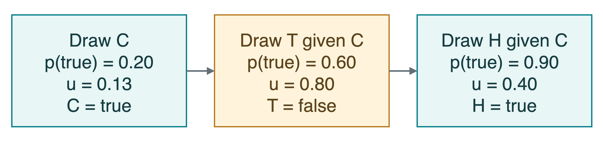
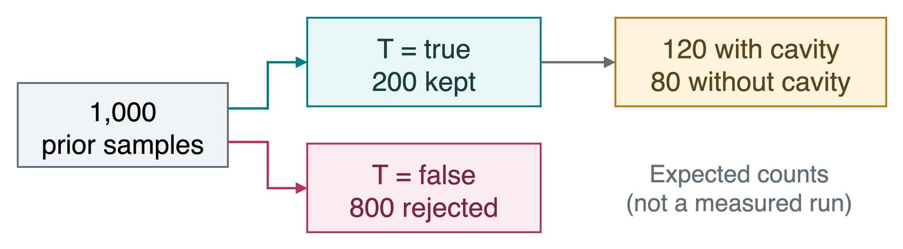
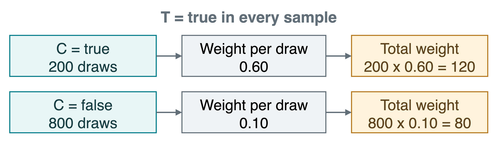
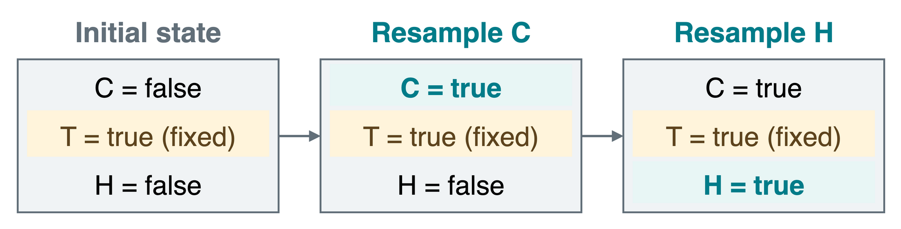

CS 463G & CS 663
(Intro to) AI
Lecture 23: Bayesian Networks
Fall 2026
The Dental Example, Illustrated

C: Cavity
A small hole caused by decay in a tooth.
T: Toothache
Pain in or around a tooth.
H: Probe catches
A dentist’s pointed tool snags on a rough spot.
Toothache and probe catch are observations, not proof of a cavity.
Graph and Local Probabilities
A Bayesian network combines a graph with local probability tables.

- A node is a random variable. Here, each is binary: true or false.
- An arrow goes from a parent to a child; a root has no parents.
- A directed acyclic graph (DAG) has arrows but no directed cycle: following arrows cannot bring us back to the starting node.
Here C: cavity; T: toothache; H: the dentist’s probe catches on the tooth.
Arrows specify the local conditioning structure, not proof of causation.
Local Probability Tables
A conditional probability table (CPT) gives a distribution for each parent assignment. A root uses a prior: its distribution before evidence.
| C |
No parent |
0.20 |
0.80 |
| T |
C=\text{true} |
0.60 |
0.40 |
| T |
C=\text{false} |
0.10 |
0.90 |
| H |
C=\text{true} |
0.90 |
0.10 |
| H |
C=\text{false} |
0.20 |
0.80 |
Each row sums to 1. The entire table does not need to sum to 1.
For short, C means C=\text{true}; \neg C means C=\text{false}, and similarly for T,H.
Factorization: Local to Joint

Factorization writes the joint probability as a product: each variable is conditioned only on its parents.
P(C,T,H)=P(C)\,P(T\mid C)\,P(H\mid C).
For one complete assignment, all three variables true:
P(C,T,H)=0.20\times0.60\times0.90=0.108.
Use the same product rule for every true/false assignment, selecting the appropriate CPT entries.
The Graph Encodes an Assumption

The model assumes conditional independence: once cavity status is known, toothache adds no information about probe catch.
T\perp H\mid C
| C=\text{true} |
P(H\mid C,T)=0.90 |
P(H\mid C,\neg T)=0.90 |
| C=\text{false} |
P(H\mid\neg C,T)=0.20 |
P(H\mid\neg C,\neg T)=0.20 |
This does not assert ordinary independence between T and H when cavity status is unknown.
Storage and Inference Cost
A free parameter is a probability we must specify. For a binary variable, the other probability in that row is 1-p.
| Our 3-node network |
2^3-1=7 |
1+2+2=5 |
| 50 nodes: one root, one parent per other node |
2^{50}-1\approx10^{15} |
1+49\times2=99 |
The saving comes from the network’s conditional-independence assumptions.
A compact model can still require expensive sums for exact inference in a large network.
One Exact Answer as a Benchmark
Target: P(C\mid T), the posterior probability of a cavity after observing a toothache.
- Query variable: what we want to infer, C.
- Evidence: an observed value, T=\text{true}.
- Hidden variable: unobserved and not the query, here H.
Summing over H leaves these two possibilities:
| True |
P(C,T)=0.20\times0.60=0.12 |
| False |
P(\neg C,T)=0.80\times0.10=0.08 |
Normalize: P(C\mid T)=\dfrac{0.12}{0.12+0.08}=0.60.
Monte Carlo: Estimate by Random Sampling
A sample is one randomly generated assignment, such as (C,T,H)=(\text{true},\text{false},\text{true}).
Monte Carlo estimation approximates probabilities using random samples.
| 20 independent draws from the model |
5 |
15 |
\widehat{P}(C)=\frac{5}{20}=0.25
\qquad\text{versus the model's }P(C)=0.20.
The hat marks an estimate, not an exact probability from the model.
More independent samples tend to reduce sampling error, but an estimate need not improve after every new draw.
Prior Sampling: Parents Before Children
A topological order puts every parent before its children. Both C,T,H and C,H,T work here.
At each node, draw from its table using the already sampled parent values.

Here u is uniform on [0,1): choose true if u<p, where p is the probability of true.
PriorSample() returns one complete joint sample. No evidence is enforced yet.
Rejection Sampling: Keep the Evidence
To estimate P(C\mid T), draw complete prior samples and reject any with T=\text{false}.

These are expected counts, not guaranteed counts in a particular batch.
\widehat{P}(C\mid T)=\frac{\text{kept samples with cavity}}{\text{all kept samples}}
\quad\text{(about }120/200=0.60\text{).}
Rare evidence means most prior samples are discarded.
Rejection Sampling: The Algorithm
Evidence is T=\text{true}. Let N be the number of prior draws; counts records the two cavity outcomes.
function EstimateCavity(N)
counts = {true: 0, false: 0}
repeat N times
C, T, H = PriorSample()
if T == true
counts[C] += 1
total = counts[true] + counts[false]
if total == 0: return no_estimate
return counts[true] / total
Divide by the number accepted, not by N. If none match, we have no estimate.
Likelihood Weighting: Fix and Reweight
Keep T=\text{true} fixed. Sample C from its prior and H given C.
A sample’s weight is the evidence probability (likelihood) given its sampled parents: w=P(T\mid C).

For this illustrative batch:
\widehat{P}(C\mid T)=\frac{120}{120+80}=0.60.
Weights make samples that better explain the evidence count more.
One Weighted Sample
draw_true(p) returns true with probability p, otherwise false. Here w is the sample’s weight for the observed toothache.
function WeightedSample()
C = draw_true(0.20)
T = true
w = 0.60 if C else 0.10
H = draw_true(0.90 if C else 0.20)
return (C, T, H, w)
Across many samples:
\widehat{P}(C\mid T)=\frac{\text{sum of weights for }C=\text{true}}{\text{sum of all weights}}.
Gibbs Sampling: Change One Variable
A state is the current assignment. Gibbs sampling keeps evidence fixed and resamples one unobserved variable given all the others.

Each next state depends on the current state, not the full history: a Markov chain. This is a Markov chain Monte Carlo (MCMC) method.
Keep T fixed; alternate updates of C and H. Use the visited states to estimate the query probability.
One Gibbs Update, Worked Out
Suppose the current state has T=\text{true} and H=\text{true}. Resample C while holding these two values fixed.
| True |
0.20\times0.60\times0.90=0.108 |
| False |
0.80\times0.10\times0.20=0.016 |
P(C\mid T,H)=\frac{0.108}{0.108+0.016}\approx0.871.
Draw a new C: true with probability 0.871, false otherwise.
Next, resample H using the new C: probability 0.90 if C is true, 0.20 otherwise. The evidence T never changes.
How the Methods Use Evidence
| Prior sampling |
Sample it like any other variable |
Joint draws alone are not a posterior estimate |
| Rejection sampling |
Discard draws that do not match |
Rare evidence wastes draws |
| Likelihood weighting |
Fix its value; weight by its likelihood |
A few large weights may dominate |
| Gibbs sampling |
Fix its value; update other variables |
Dependent states may explore possibilities slowly |
If only 1 in 10,000 prior samples matches the evidence, which method immediately wastes most draws?
Rejection sampling. Fixing the evidence avoids those rejections, but does not guarantee a fast, accurate estimate.
Short Practice: Two Observations
Observe a toothache and no probe catch. Estimate P(C\mid T,\neg H) by likelihood weighting, fixing both observations.
Suppose 1,000 prior draws of C give these counts:
| True |
200 |
0.60 |
0.10 |
| False |
800 |
0.10 |
0.80 |
What is each sample’s weight? What is the normalized estimate?
Weights: 0.60\times0.10=0.06 and 0.10\times0.80=0.08.
Total weights: 200\times0.06=12, 800\times0.08=64.
\widehat{P}(C\mid T,\neg H)=\frac{12}{12+64}\approx0.158.
Takeaways
- Graph + local tables specify a joint distribution.
- Conditional independence makes the representation compact.
- Identify the query, evidence, and hidden variables first.
- Rejection, weighting, and Gibbs sampling differ in how they use evidence.
- An approximate answer still needs enough useful samples; no method is always best.
Same model, same query, different routes to an estimate. Check against an exact answer when one is available.
Asset credits